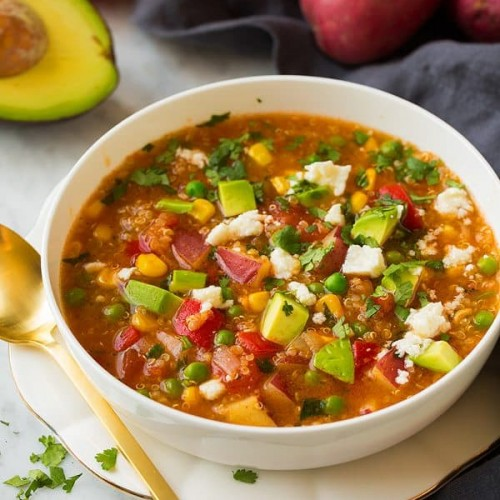

Veggie Stew

Description
This recipe assumes that you have access to an instant pot, however if you do not a large pot should suffice but cook times may increase.
Ingredients List
- 2 Cups Veggie Broth
- 2-3 Cups of Mushrooms (White, Cremini, or Baby Bella)
- 2 Tbsp Butter or Olive Oil (I like to use both)
- 3-4 Large Carrots
- 2 Cups Spinach